This article describes how plot2() sets colours, how to
use palettes and the colours of an organisation, and how to change the
theme and the titles of a plot.
Setting colours
colour sets the colours of a plot, whatever its type.
ggplot2 distinguishes between the colour
aesthetic (for points and lines) and the fill aesthetic
(for areas such as bars), each with its own scale functions.
plot2() determines which of the two applies and sets both
where needed. Without colour, the colours of
ggplot2 are used:
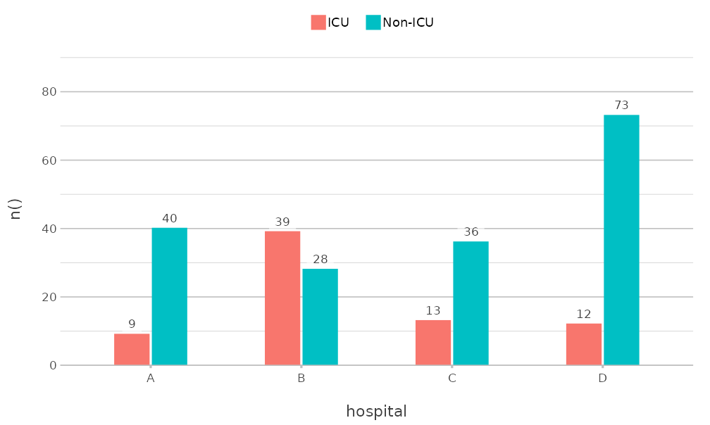
colour accepts R colour names, hexadecimal codes and
palette names. A vector of colours is used in the order of the values of
category:
admitted_patients |>
plot2(x = hospital, y = n(), category = ward, colour = c("steelblue", "#E15759"))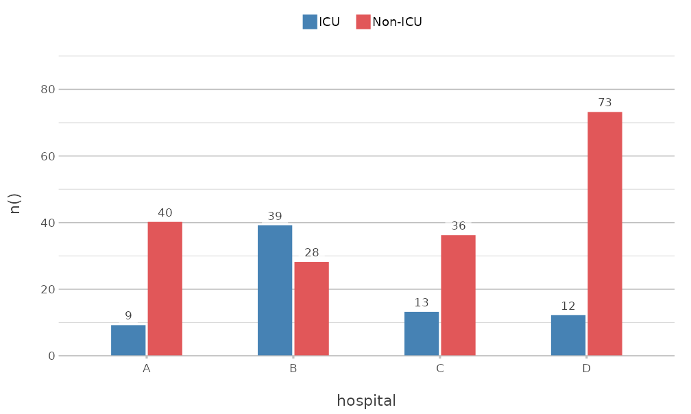
A named vector matches its names to the values of
category, so that a value keeps its colour in every plot,
even when not all values are present:
admitted_patients |>
plot2(x = hospital,
y = n(),
category = ward,
colour = c("Non-ICU" = "grey70", "ICU" = "#E15759"))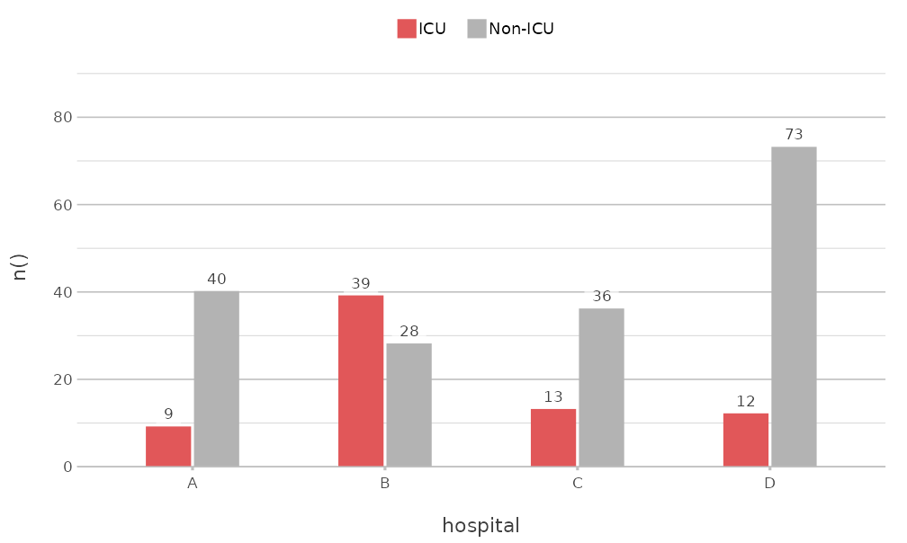
Palettes
The colourblind-safe palettes of the viridisLite package
are available by name: "viridis", "magma",
"inferno", "plasma", "cividis",
"rocket", "mako" and "turbo". So
are the palettes of base R, such as "Okabe-Ito",
"R4" and "Tableau 10" (see
grDevices::palette.pals()):
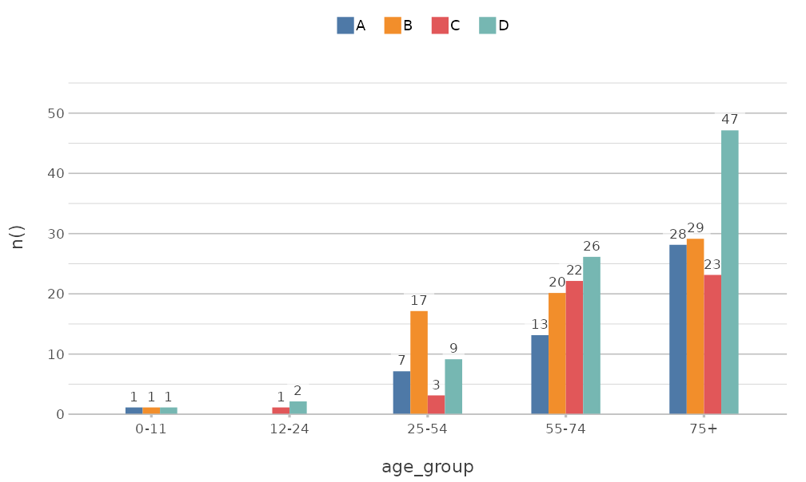
get_colour() returns the colours that
plot2() uses for a name or palette. A palette is extended
where needed, so that it never runs out of colours:
get_colour("Tableau 10", length = 4)
#> [1] "#4E79A7" "#F28E2B" "#E15759" "#76B7B2"
get_colour(c("red", "#4E79A7", "f80"))
#> [1] "#FF0000" "#4E79A7" "#FF8800" Colour and fill
Where a geom has both a line and an area, such as columns and
boxplots, colour applies to both. colour_fill
sets the area separately:
admitted_patients |>
plot2(x = hospital,
y = age,
category = ward,
type = "boxplot",
colour = c("#4E79A7", "#E15759"),
colour_fill = "white")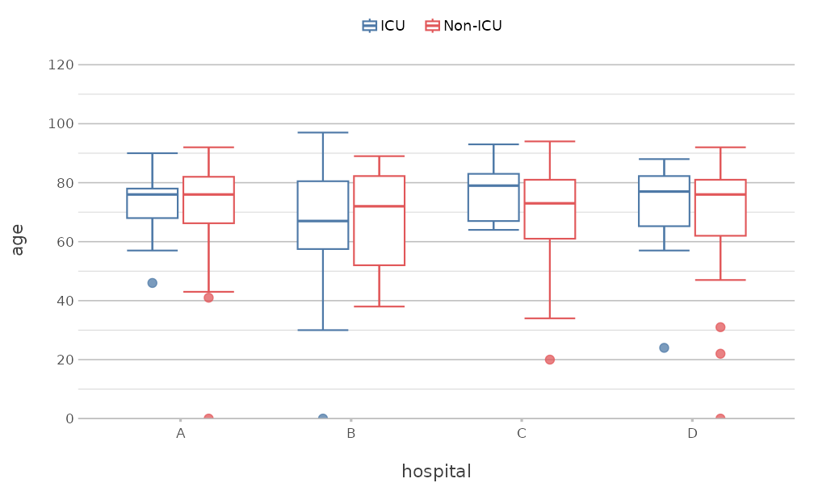
colour_transparency makes the colours transparent, from
0 (solid) to 1 (fully transparent).
Numeric categories
A numeric category gets a continuous colour scale. Two
colours give a gradient, and three colours give a scale that diverges
from the midpoint, which category.midpoint sets:
mtcars |>
plot2(x = wt,
y = mpg,
category = hp,
colour = c("#2166AC", "grey90", "#B2182B"),
category.midpoint = 150,
size = 3)
#> Using type = "point" since both axes are numeric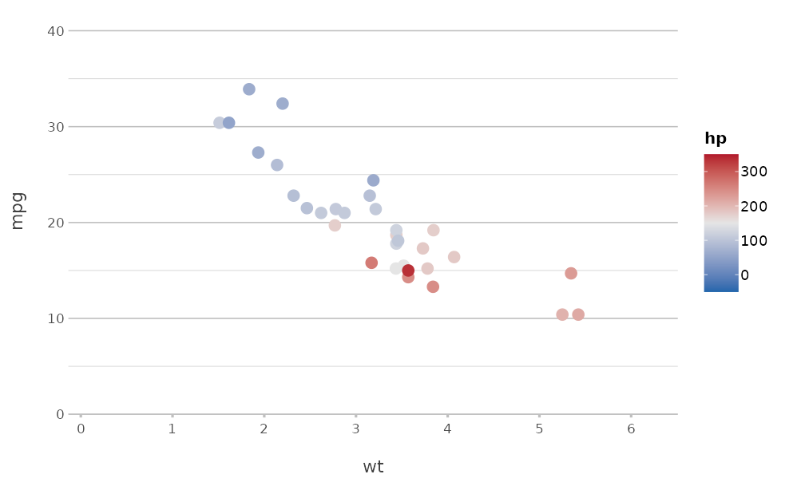
Colours of an organisation
register_colour() adds colours under a name of your
choice, which can then be used everywhere plot2() accepts
colours. A set of registered colours can itself be registered as a
palette:
register_colour(company_blue = "#1F3A93",
company_orange = "#D35400",
company_green = "#2C6F47",
company_grey = "#708090")
#> 4 colours registered.
register_colour(company = c("company_blue", "company_orange", "company_green", "company_grey"))
#> 1 colour set registered.
get_colour("company", length = 4)
#> [1] "#1F3A93" "#D35400" "#2C6F47" "#708090" 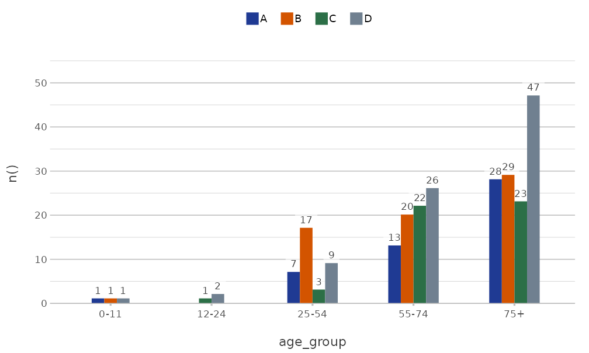
The option plot2.colour sets the default colours for all
plots in the session:
options(plot2.colour = "company")
admitted_patients |>
plot2(x = hospital, y = n(), category = gender)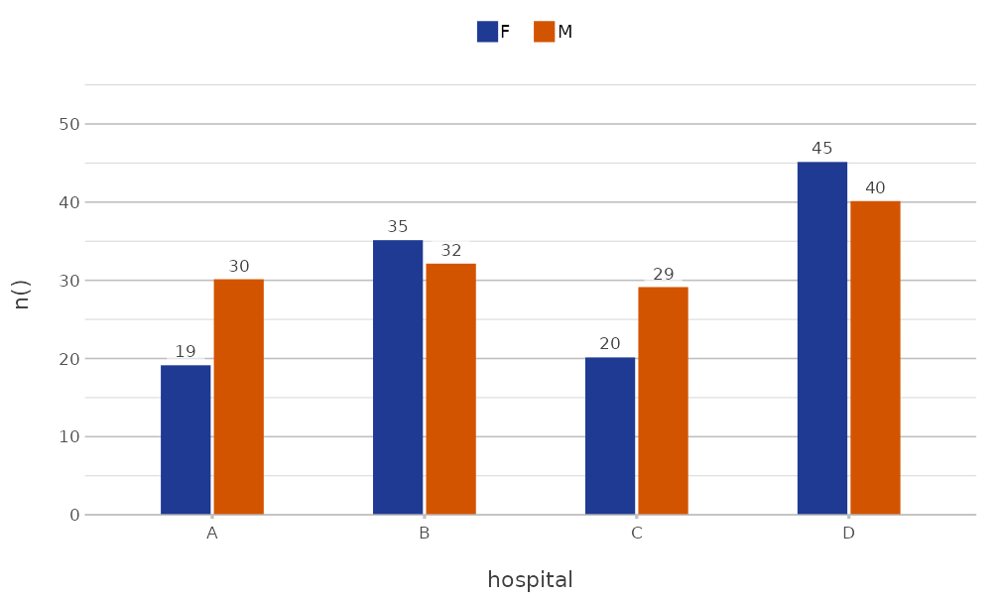
options(plot2.colour = NULL)
unregister_colour("^company")
#> 5 colours unregistered.A package can register colours when it is loaded, so that all users
of that package get the same colours. ?get_colour shows
how.
Themes
plot2() applies theme_minimal2() by
default. This theme is based on ggplot2::theme_minimal(),
with fewer grid lines, more white space and the legend at the top, and
it is suited to print. The theme argument sets another
theme, and theme = NULL uses the default theme of
ggplot2:
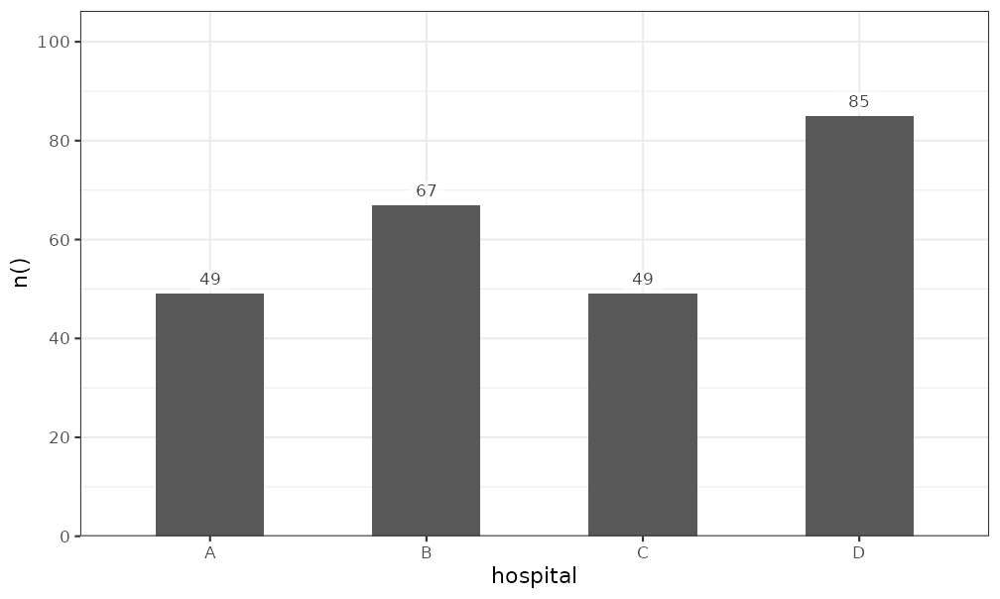
A partial theme, made with ggplot2::theme(), is added to
theme_minimal2(), so that only the given elements
change:
admitted_patients |>
plot2(x = hospital,
y = n(),
theme = ggplot2::theme(panel.grid.major.y = ggplot2::element_blank()))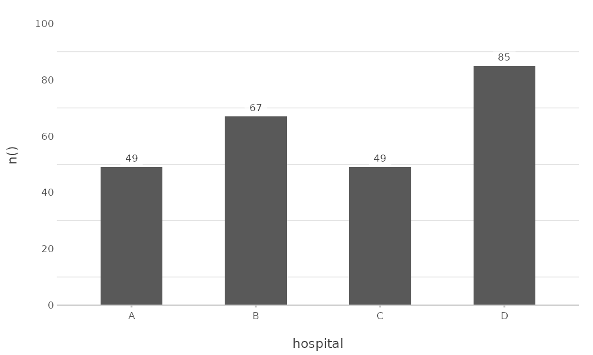
Other arguments change frequent elements directly.
background sets the background colour,
text_factor scales all text, and
legend.position places the legend:
admitted_patients |>
plot2(x = hospital,
y = n(),
category = gender,
background = "#F5F5F0",
text_factor = 1.2,
legend.position = "right")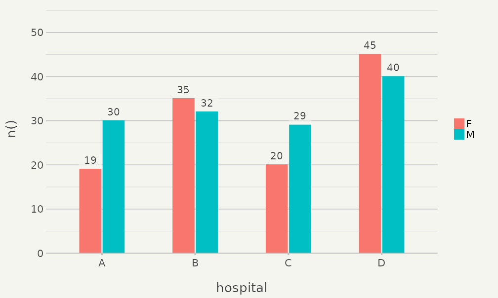
The options plot2.theme,
plot2.colour_background, plot2.text_factor,
plot2.colour_font_primary (title),
plot2.colour_font_secondary (subtitle and caption) and
plot2.colour_font_axis (axis titles) set these defaults for
all plots. ?plot2-options lists all options.
Titles
Titles support markdown for italic (*text*) and bold
(**text**) text, which is often needed for the names of
species, and <br> for a line break.
plot2() converts the markdown to a plotmath
expression with md_to_expression():
data.frame(species = c("E. coli", "K. pneumoniae", "S. aureus"),
isolates = c(412, 128, 197)) |>
plot2(x = species,
y = isolates,
title = "Isolates of *E. coli*, *K. pneumoniae* and *S. aureus*",
subtitle = "**Fictitious** data",
x.label_italic = TRUE)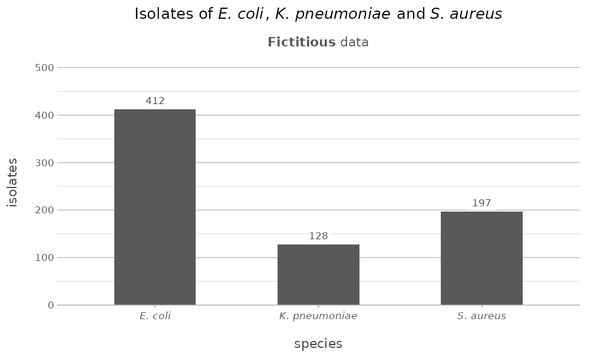
Set markdown = FALSE to show the text as it is. Long
titles are wrapped at title.linelength characters.